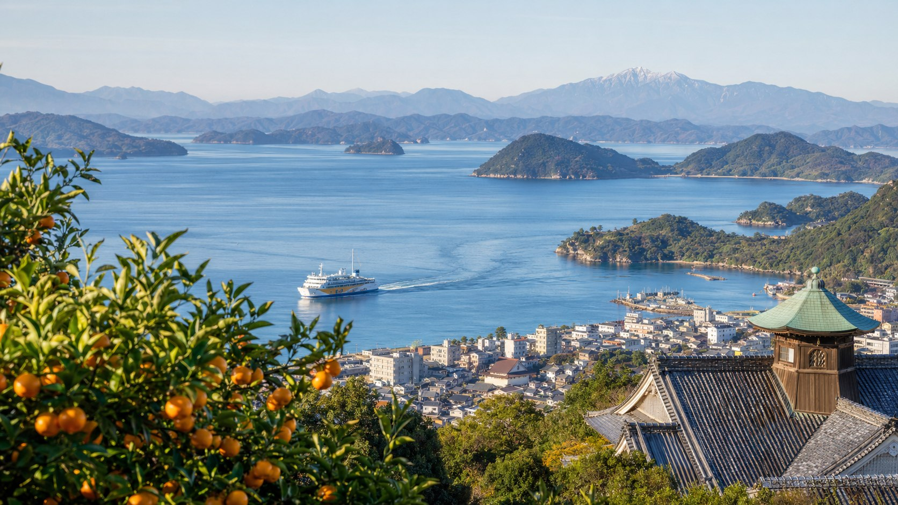
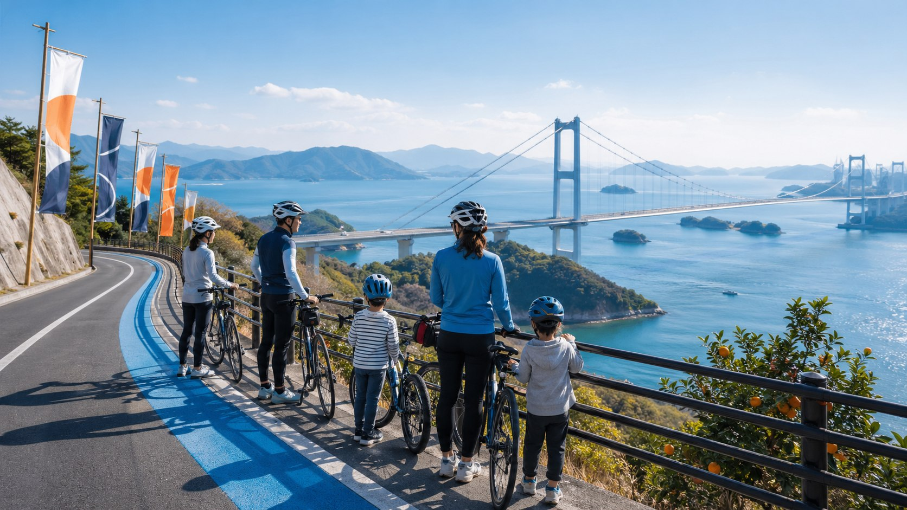
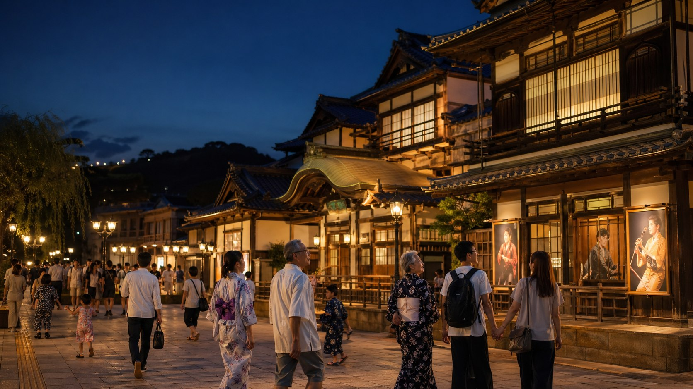
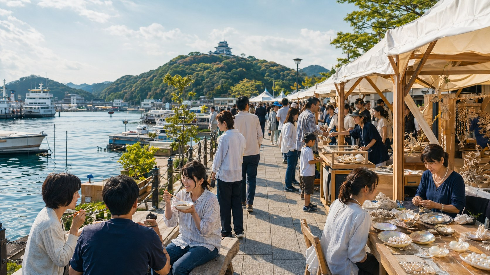

イベントと観光地を組み合わせる
正式決定後、この方針に沿って具体的な情報を掲載します。
文化と旅を結ぶ
県内市町の観光サイトや関連リンクをまとめます。

ページの役割
県内市町の観光サイトや関連リンクをまとめます。
写真表現



掲載イメージ
正式決定後、この方針に沿って具体的な情報を掲載します。
正式決定後、この方針に沿って具体的な情報を掲載します。
正式決定後、この方針に沿って具体的な情報を掲載します。
完成形の具体例
公式観光サイト等を確認しながら、松山・道後、しまなみ海道、石鎚山、内子・大洲、宇和島・宇和海、砥部焼、食文化などをイベント導線と接続します。
「市町観光リンク集」では、観光写真を大きく掲載ための情報を整理します。
正式決定後は、この方針に沿って本文・資料リンク・問い合わせ先を更新します。
公式情報・参照元
本ページ案の記述は、愛媛県庁の開催準備情報と、愛媛県公式観光サイト等で確認できる観光・文化資源をもとに整理しています。
同じ分類のページ
問い合わせ導線
担当部署、受付時間、メールアドレス等は正式決定後に掲載します。現段階では仮導線として総合問い合わせへ誘導します。